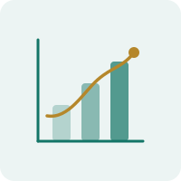
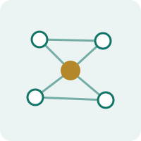

I am an Assistant Professor in the
Department of Computer Science and Software Engineering
at Miami University. I received my Bachelor of Science in Internet of Things from
Dalian Maritime University in 2022 and my Ph.D. in Electrical and Computer
Engineering from the University of Houston in 2026, advised by Prof. Miao Pan.
Quantum computing holds great promise for solving complex problems beyond the reach of classical
computers. However, realizing its full potential requires addressing critical challenges in
scalability, efficiency, and security. My research focuses on building secure, privacy-preserving,
and efficient quantum computing systems, with particular interests in
quantum privacy and security, distributed quantum computing optimization,
and topology design for quantum networks and data centers.
🎓
I'm recruiting Ph.D. students!
I am recruiting Ph.D. students to join my group. If you are passionate about
quantum computing, quantum optimization, or
quantum privacy, feel free to reach out to me at
zhongh7 [AT] miamioh [DOT] edu.
For application details and requirements, please see Recruiting.
Paper Three of our papers were accepted to IEEE ICNC 2027.
2026.10
Paper Our paper UNIQ: Communication-Efficient Distributed Quantum Computing via Unified Nonlinear Integer Programming was accepted to IEEE Journal on Selected Areas in Communications.
2026.10
GrantIonQ Research Credits Program: awarded $8,000 in quantum hardware credits.
2026.10
ServiceIEEE ICNC 2027: serving as Track Chair of the Quantum Networking and AI for Computing & Control (QNACC) track.
2026.10
ServiceIEEE ICNC 2027: serving as TPC Member.
2026.10
ServiceIEEE QCNC 2027: serving as TPC Member.
2026.10
ServiceECI 2027: serving as Organizing Committee Member.
2026.09
Paper Our paper LLM eBay: A Simple and Truthful Marketplace for Fine-Tuned LLMs Trading was accepted to NeurIPS 2026.
2026.08
Position Joined the Department of Computer Science and Software Engineering at Miami University as an Assistant Professor.
2025.09
ServiceIEEE QCE 2025: served as Session Chair for “Toward Secure and Reliable Quantum Computing in the NISQ Era”, Albuquerque.
2025.09
Talk Gave an oral presentation on Enhanced Local Differential Privacy Protection against Crosstalk Attacks in Quantum Computing at IEEE QCE 2025.
2025.07
Paper Our paper Enhanced Local Differential Privacy Protection against Crosstalk Attacks in Quantum Computing was accepted to IEEE QCE 2025.
2025.04
Paper Our paper Eve Said Yes: AirBone Authentication for Head-Wearable Smart Voice Assistant was accepted to IEEE Transactions on Mobile Computing.
Advisor: Prof. Miao Pan. Focus on privacy and security for quantum computing.
Academic Exchange, Computer Science2021 – 2022
Loughborough University · Loughborough, UK
B.S., Internet of Things2018 – 2022
Dalian Maritime University · Dalian, China
Research
Quantum computing systems must be secure and efficient as they scale from individual processors to
distributed platforms. My research develops system-level models, optimization methods, and privacy
mechanisms for both near-term quantum devices and emerging multi-device architectures. It is
organized around three threads.
Thread 01
Quantum Privacy and Security
Privacy and security foundations for quantum computing systems, including quantum differential
privacy and its local and Rényi variants. My work studies how noise, randomization, and system
design can provide measurable protection for quantum computation, with validation on simulators
and real IBM quantum devices.

Thread 02
Quantum System Optimization
Optimization methods for efficient quantum computing systems, including resource allocation,
workload partitioning, scheduling, and learning-based frameworks. These methods aim to improve
performance as quantum hardware becomes larger, noisier, and more interconnected.

Thread 03
Quantum Networks and Topology
System architecture for networked quantum computing, including entanglement management,
topology design, and quantum data-center architectures. This thread studies how quantum
processors should be connected and coordinated to support scalable distributed quantum
computation.
Publications
Journal Articles
UNIQ: Communication-Efficient Distributed Quantum Computing via Unified Nonlinear Integer Programming
Hui Zhong, Jiachen Shen, Lei Fan, Xinyue Zhang, Hao Wang, Miao Pan, Zhu Han
IEEE J. Selected Areas in Communications 2026 Link ↗
Mechanism-Guided Graph Learning for Carbon Border Policy Evaluation in Interconnected European Electricity Markets
Jiachen Shen, Jian Shi, Hui Zhong, Chenye Wu, Dan Wang, Zhu Han
Center for Teaching Excellence (CTE), IGNITE Level 3 Grant (Generative AI in Teaching)
Research Computing Allocations and Credits
Calibrating the Fidelity Cost of Qubit Migration and Remote Gates for Distributed Quantum Computing
IonQ, Research Credits Program
PI · 2026 · $8,000 Quantum Hardware Credits
GPU Simulation of Variational Quantum Training on Networked Quantum Processors
National Science Foundation (NSF), ACCESS Discover Allocation
PI · 2026 · 1,500,000 GPU Computing ACCESS Credits
Teaching
QTM 161: Quantum Computing Basics
Miami University, Department of Computer Science and Software Engineering
Fall 2026, Spring 2027 · Undergraduate
Instructor
QTM 261: Quantum Information Processing
Miami University, Department of Computer Science and Software Engineering
Spring 2027
Instructor
ECE 5397/6397: Introduction to Cybersecurity
University of Houston, Department of Electrical and Computer Engineering
Spring 2024 and Fall 2024 · Undergraduate and Graduate
Teaching Assistant & Guest Lecturer
Professional Service
Track Chair
Quantum Networking and AI for Computing & Control (QNACC) Track, IEEE International Conference on Computing, Networking and Communications (ICNC 2027)
Technical Program Committee (TPC) Member
IEEE International Conference on Quantum Communications, Networking, and Computing (QCNC 2027) · IEEE International Conference on Computing, Networking and Communications (ICNC 2027)
Organizing Committee Member
International Conference on Electronic Communications and Internet of Things Technologies (ECI 2027)
Session Chair
Toward Secure and Reliable Quantum Computing in the NISQ Era, IEEE International Conference on Quantum Computing and Engineering (QCE), Albuquerque, United States, Sept. 2025
Reviewer · Journals
Future Generation Computer Systems · Journal of Air Transport Management · ACM Computing Surveys · IEEE Open Journal of Vehicular Technology · IEEE Journal on Selected Areas in Communications · ICT Express · Pattern Recognition · Pervasive and Mobile Computing · Discrete Mathematics
Reviewer · Conferences
IEEE Global Communications Conference (GLOBECOM) · IEEE Vehicular Technology Conference (VTC) · International Conference on Artificial Intelligence, Information Processing and Cloud Computing (AIIPCC) · American Control Conference (ACC) · IEEE International Conference on Computing, Networking and Communications (ICNC)
Membership
IEEE Member (since 2026)
Recruiting
Multiple Ph.D. and research assistant positions are available for highly self-motivated students.
Research topics are flexible; I am currently most interested in quantum computing, quantum
optimization, and quantum privacy.
Application Instructions
If you are interested in applying for a Ph.D. position, please email the following materials to
zhongh7@miamioh.edu:
Curriculum Vitae (CV) Required
Transcripts Required
Previous projects or publications Optional
Any other material that communicates your background, e.g., code or project samples Optional
For International Students
TOEFL iBT: 80 or higher
For other requirements and any questions, please feel free to email me at
zhongh7@miamioh.edu.
Contact
I am always glad to discuss quantum computing systems, privacy, and optimization, and to hear
from prospective students. The best way to reach me is by email.